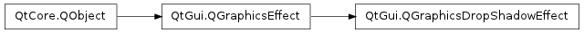
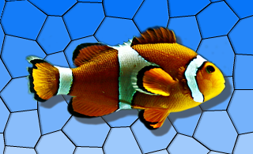

QGraphicsDropShadowEffect ¶

Note
This class was introduced in Qt 4.6
Synopsis ¶
Slots ¶
- def setBlurRadius (blurRadius)
- def setColor (color)
- def setOffset (d)
- def setOffset (dx, dy)
- def setOffset (ofs)
- def setXOffset (dx)
- def setYOffset (dy)
Signals ¶
- def blurRadiusChanged (blurRadius)
- def colorChanged (color)
- def offsetChanged (offset)
Detailed Description ¶
The PySide.QtGui.QGraphicsDropShadowEffect class provides a drop shadow effect.
A drop shadow effect renders the source with a drop shadow. The color of the drop shadow can be modified using the PySide.QtGui.QGraphicsDropShadowEffect.setColor() function. The drop shadow offset can be modified using the PySide.QtGui.QGraphicsDropShadowEffect.setOffset() function and the blur radius of the drop shadow can be changed with the PySide.QtGui.QGraphicsDropShadowEffect.setBlurRadius() function.
By default, the drop shadow is a semi-transparent dark gray ( PySide.QtGui.QColor (63, 63, 63, 180)) shadow, blurred with a radius of 1 at an offset of 8 pixels towards the lower right. The drop shadow offset is specified in device coordinates.

- class PySide.QtGui. QGraphicsDropShadowEffect ( [ parent=None ] ) ¶
-
Parameters: parent – PySide.QtCore.QObject Constructs a new PySide.QtGui.QGraphicsDropShadowEffect instance. The parent parameter is passed to PySide.QtGui.QGraphicsEffect ‘s constructor.
- PySide.QtGui.QGraphicsDropShadowEffect. blurRadius ( ) ¶
-
Return type: PySide.QtCore.qreal This property holds the blur radius in pixels of the drop shadow..
Using a smaller radius results in a sharper shadow, whereas using a bigger radius results in a more blurred shadow.
By default, the blur radius is 1 pixel.
- PySide.QtGui.QGraphicsDropShadowEffect. blurRadiusChanged ( blurRadius ) ¶
-
Parameters: blurRadius – PySide.QtCore.qreal
- PySide.QtGui.QGraphicsDropShadowEffect. color ( ) ¶
-
Return type: PySide.QtGui.QColor This property holds the color of the drop shadow..
By default, the drop color is a semi-transparent dark gray ( PySide.QtGui.QColor (63, 63, 63, 180)).
- PySide.QtGui.QGraphicsDropShadowEffect. colorChanged ( color ) ¶
-
Parameters: color – PySide.QtGui.QColor
- PySide.QtGui.QGraphicsDropShadowEffect. offset ( ) ¶
-
Return type: PySide.QtCore.QPointF This property holds the shadow offset in pixels..
By default, the offset is 8 pixels towards the lower right.
The offset is given in device coordinates, which means it is unaffected by scale.
- PySide.QtGui.QGraphicsDropShadowEffect. offsetChanged ( offset ) ¶
-
Parameters: offset – PySide.QtCore.QPointF
- PySide.QtGui.QGraphicsDropShadowEffect. setBlurRadius ( blurRadius ) ¶
-
Parameters: blurRadius – PySide.QtCore.qreal This property holds the blur radius in pixels of the drop shadow..
Using a smaller radius results in a sharper shadow, whereas using a bigger radius results in a more blurred shadow.
By default, the blur radius is 1 pixel.
- PySide.QtGui.QGraphicsDropShadowEffect. setColor ( color ) ¶
-
Parameters: color – PySide.QtGui.QColor This property holds the color of the drop shadow..
By default, the drop color is a semi-transparent dark gray ( PySide.QtGui.QColor (63, 63, 63, 180)).
- PySide.QtGui.QGraphicsDropShadowEffect. setOffset ( d ) ¶
-
Parameters: d – PySide.QtCore.qreal
- PySide.QtGui.QGraphicsDropShadowEffect. setOffset ( dx , dy )
-
Parameters: - dx – PySide.QtCore.qreal
- dy – PySide.QtCore.qreal
- PySide.QtGui.QGraphicsDropShadowEffect. setOffset ( ofs )
-
Parameters: ofs – PySide.QtCore.QPointF This property holds the shadow offset in pixels..
By default, the offset is 8 pixels towards the lower right.
The offset is given in device coordinates, which means it is unaffected by scale.
- PySide.QtGui.QGraphicsDropShadowEffect. setXOffset ( dx ) ¶
-
Parameters: dx – PySide.QtCore.qreal This property holds the horizontal shadow offset in pixels..
By default, the horizontal shadow offset is 8 pixels.
- PySide.QtGui.QGraphicsDropShadowEffect. setYOffset ( dy ) ¶
-
Parameters: dy – PySide.QtCore.qreal This property holds the vertical shadow offset in pixels..
By default, the vertical shadow offset is 8 pixels.
- PySide.QtGui.QGraphicsDropShadowEffect. xOffset ( ) ¶
-
Return type: PySide.QtCore.qreal This property holds the horizontal shadow offset in pixels..
By default, the horizontal shadow offset is 8 pixels.
- PySide.QtGui.QGraphicsDropShadowEffect. yOffset ( ) ¶
-
Return type: PySide.QtCore.qreal This property holds the vertical shadow offset in pixels..
By default, the vertical shadow offset is 8 pixels.